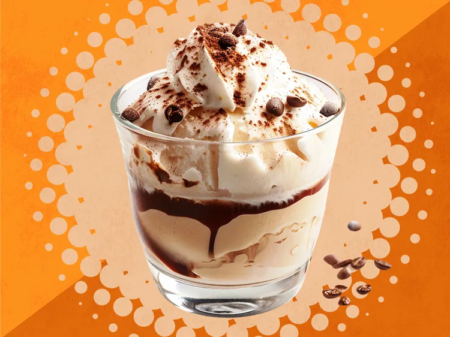

Affogato
home

Description :
An affogato (Italian for "drowned") is a classic Italian coffee-based dessert consisting of a scoop of cold vanilla gelato or ice cream "drowned" under a shot of hot, freshly brewed espresso.
The contrast between the bitter, scorching espresso and the sweet, dense, melting gelato creates a rich, creamy temperature and flavor balance that sits right between a drink and a dessert.
Ingredients :
- Gelato or Ice Cream: 1–2 scoops (approx. 60–90 g) of high-density vanilla gelato (fior di latte or vanilla bean works best; standard ice cream works too, though it melts faster).
- Espresso: 1 double shot (approx. 30–60 ml) of freshly pulled espresso—or strong Moka pot coffee.
- Glassware: A small, thick-walled glass or rocks glass (ideally chilled beforehand so the gelato holds its shape longer).
- Optional Toppings: Crushed biscotti or amaretti cookies, shaved dark chocolate, roasted hazelnuts, or a splash of liqueur (such as amaretto or Frangelico).
How to make an Affogato :
- Place a small glass or cup in the freezer before brewing. A cold glass slows down melting so you get distinct hot-and-cold bites rather than instant coffee soup.
- Pull a hot double shot of espresso (or brew a small, concentrated batch on a Moka pot) into a separate small pitcher or shot glass with a spout for easy pouring.
- Remove your chilled glass from the freezer and add 1 to 2 firm scoops of vanilla gelato. Work quickly so the edges stay crisp.
- Pour the hot espresso directly over the top of the gelato right before serving (or let the guest pour it at the table). Add any optional toppings and eat immediately with a small spoon before the gelato completely melts.